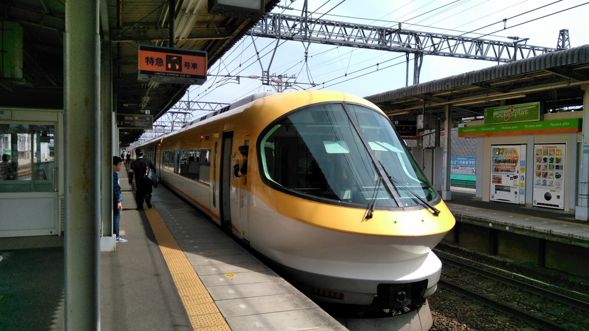
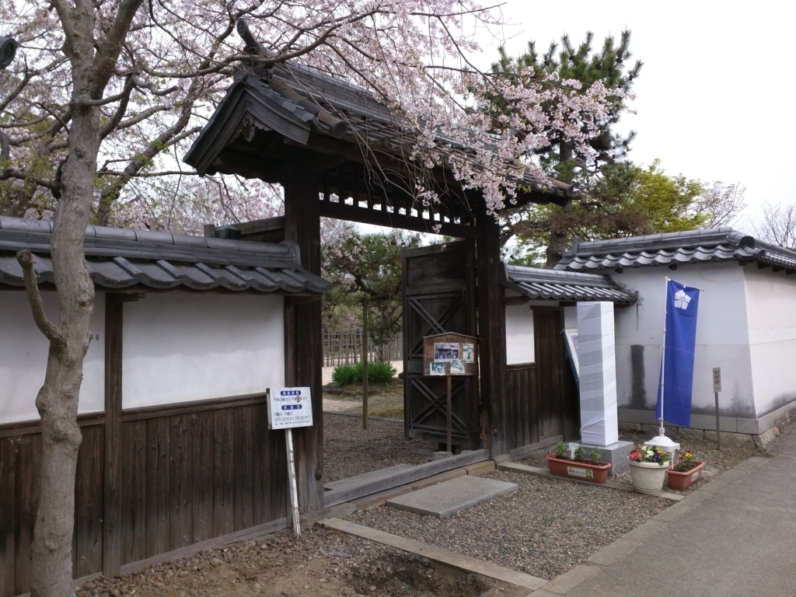
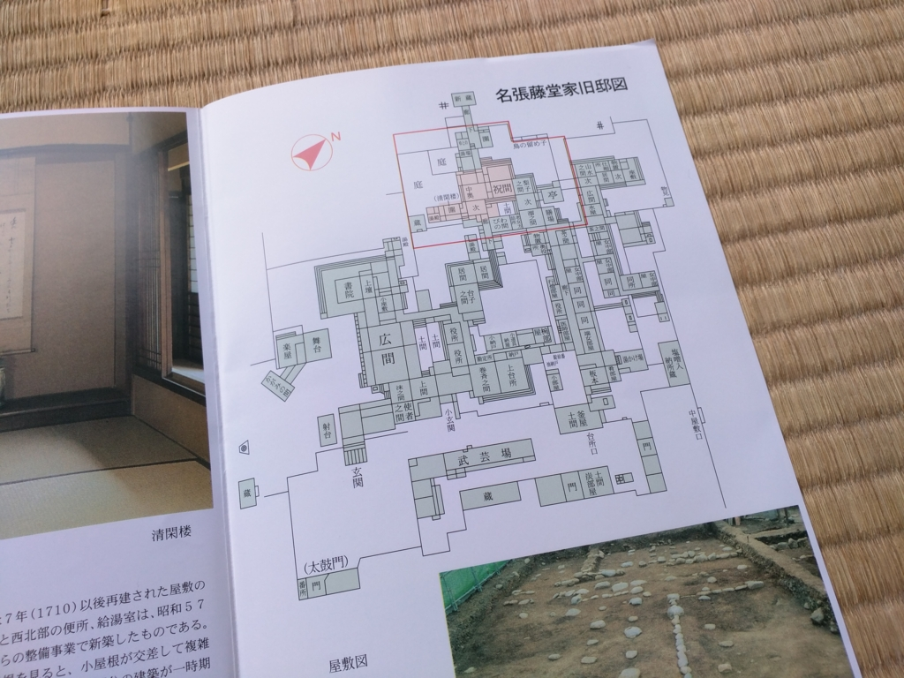
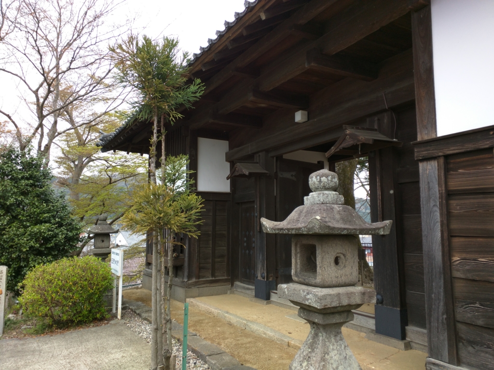
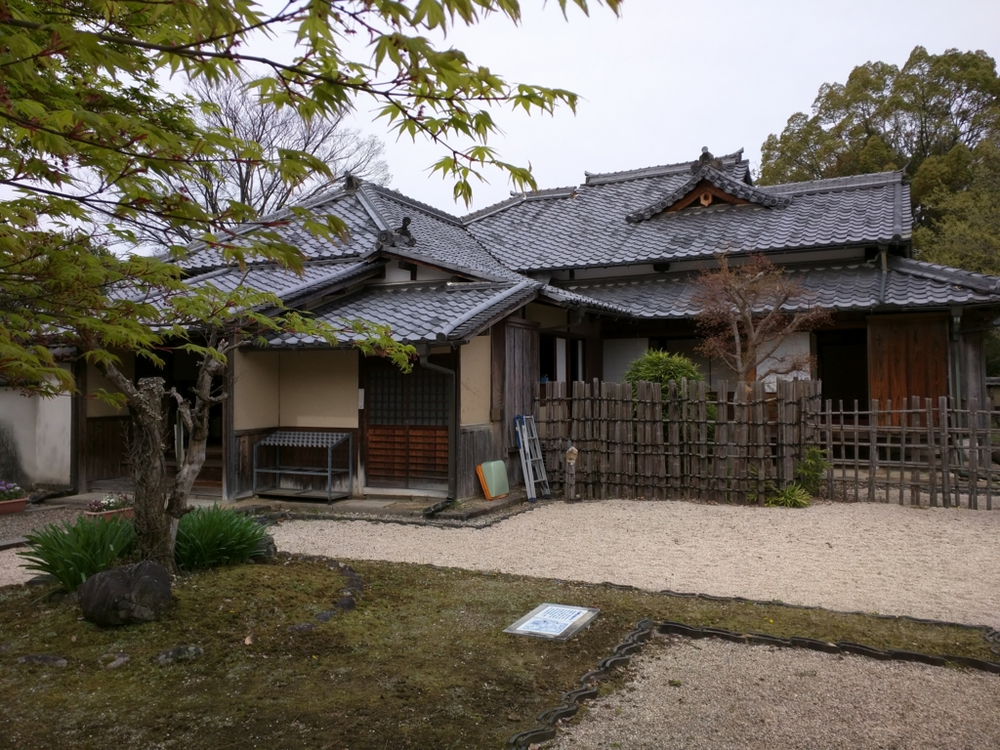
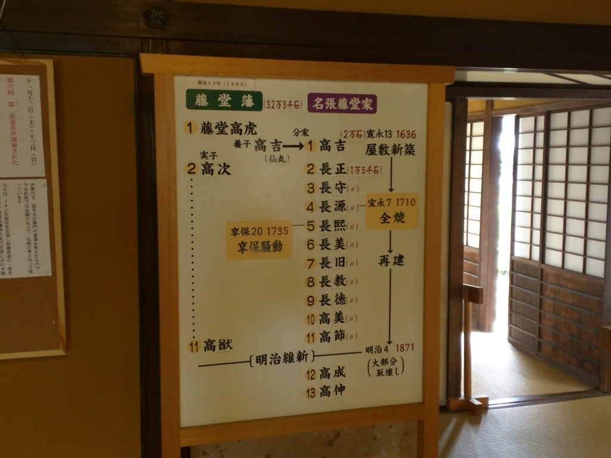
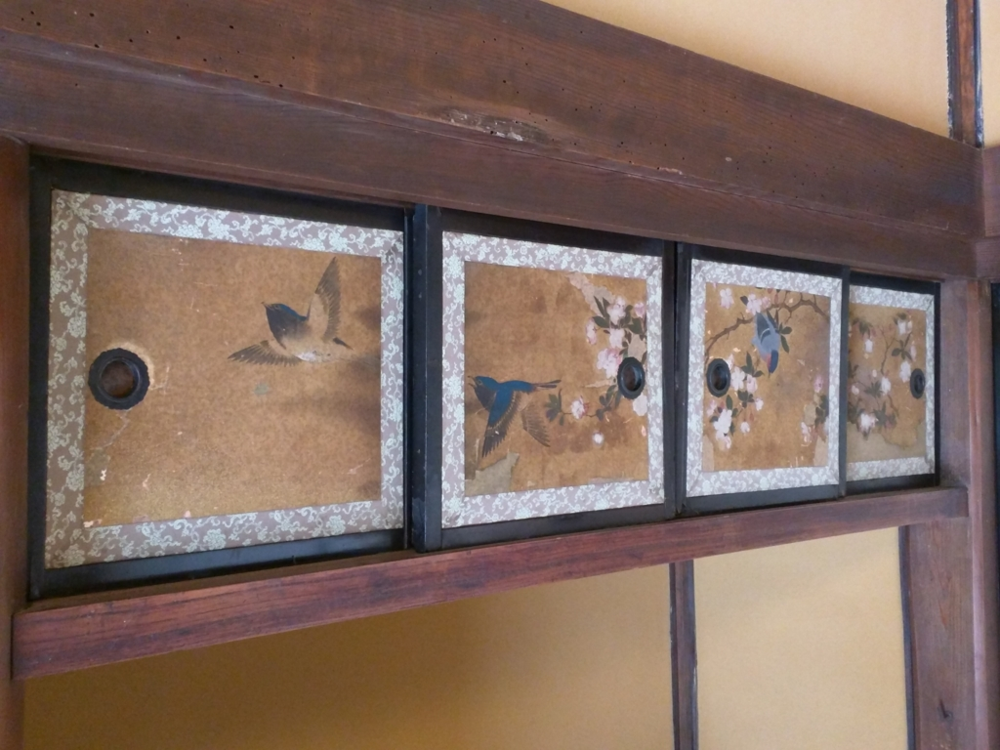
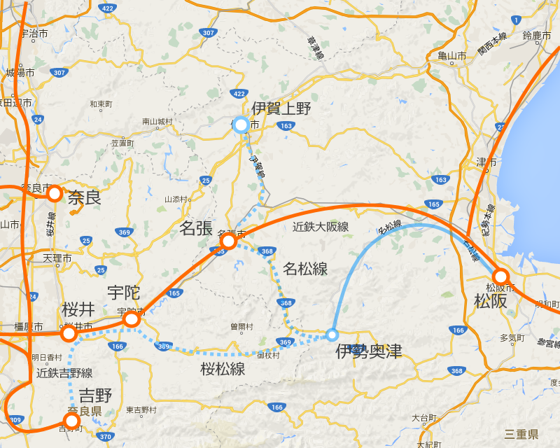

散策：藤堂高吉と名張城（？）。そして名松線
公開日：

先日、名張までお墓参りに行ってきました。そのついでに、名張藤堂家邸跡を訪ねてみました。史跡としてはたいして大きくないし、有名でもないのですが、ここにも歴史がいっぱい詰まっていました。
朝から伊賀牛すじカレー
朝食はホテルの“伊賀牛すじカレー”。ほんとは最近できたB級グルメ（俺が小さい頃はこんなのなかった！）“牛汁”を食べたかったのですが、寝坊したせいで売り切れていたようです。確かにおいしかったけど、朝からカレーとはヘビーだぜ。
駅前のホテルから名張藤堂家邸跡までは徒歩で5分から10分ほど。スーツケースをゴロゴロ転がしながら、ぶらぶらと向かいます。坂はあるけど、コインロッカーに預けるほどの距離じゃない。
名張藤堂家邸跡

名張中学校の前にこじんまりとあるのが、今回の目的である名張藤堂家邸跡。本当はもっと大きく、実質的な“お城”だったのですが、明治維新のころに取り壊されてしまったのだそうです。残ったのは、この名張藤堂家のプライベートエリアだけ。

（写真の赤い枠の部分ですね）
さて、先ほど「実質的な“お城”」と表現しましたが、実はそれにはワケが。それを説明するには、藤堂高吉という人物について少し触れる必要があります。
藤堂高吉

藤堂高吉は天正7年（1579年）、近江佐和山城で丹羽長秀の三男として生まれました。幼名は仙丸（せんまる）。丹羽長秀は柴田勝家に次ぐ織田家の No.2 でしたが、本能寺の変の仇討ち競争で後れを取り、後継者争いから脱落してしまいます。そこへ触手を伸ばしたのが、羽柴秀吉でした。秀吉は羽柴＝丹羽の結びつきを高めるため、まだ幼い仙丸を弟・羽柴秀長の養子として迎えます。仙丸は、のちの「大和豊臣家の相続人」として育てられられたのです。
しかし天正16年（1588年）、秀吉は甥の羽柴秀吉を秀長の跡継ぎに指名（あれ、丹羽長秀との繋がりはどうするんだ？）。秀長は仙丸を割りと気に入っていたようで抵抗しますが、兄のゴリ押しにはかないません。結局、当時秀長の家臣であった藤堂高虎が仙丸を養子としてもらい受けることになりました。高虎にも当時男児がいなかったので、もちろん「藤堂家の相続人」としてです。仙丸は従五位下宮内少輔に叙任され、高虎から「高」の字を与えられ、名を藤堂高吉と改めました。
仙丸あらため高吉は、文禄の役で朝鮮半島へ渡海。秀吉からは朝鮮在陣の褒詞を受けています。また、慶長5年（1600年）の関ヶ原の戦いでも東軍に与して活躍。父・高虎とともに伊予・今治20万石を得ました。
しかし、ここで高吉の運命が大きく変える出来事が起こります。関ヶ原の翌年、、慶長6年（1601年）に藤堂家に念願の男児・高次が誕生したのです。これまでの世継ぎとしての立場は一変し、高吉をめぐる境遇は厳しくなっていきます。
まず、慶長9年（1604年）、加藤嘉明と些細な騒動を起こしたことをとがめられ蟄居処分に。参勤交代にも同伴させてもらえませんでした。慶長11年（1606年）に許されて江戸城普請を務めた功績により、伊予・今治城主に任じられますが、慶長13年（1608年）に高虎が今治から伊勢・伊賀へ移った後も、今治にとどめ置かれ、高虎とは離れて27年間にわたり2万石を治めることになります。
そして寛永7年（1630年）、高虎が亡くなると、2代・藤堂高次の家臣という立場に。高吉は高虎の葬儀にも参列させてもらえず、松平定房の今治転封にともない伊勢・2万石へ移されると、そのうち5000石を次男以下3名に分知するように強いられたばかりか、名張の屋敷へ移るように命じられます。名張の地行はたった5千石で、メインの1万石は伊勢（松阪・伊勢奥津？）にあったにもかかわらずです。しかも、一説によると、高虎が高吉に5万石を与えるようにと遺言した（さすがに可哀想になったのかな？）にもかかわらず、高次はそれを実行せず、次男の藤堂高通に与えてしまったとか（これが久居藩）。

（今治城から、この名張ハウスへ）
高次と高吉の年齢差は20歳。方や高虎の実子であるだけなのに対し、高吉は実父に丹羽長秀、養父に豊臣秀次・藤堂高虎をもち、豊臣秀吉・徳川家康から直接禄を受けた経験があります。また戦歴に目を向ければ、朝鮮渡海・関が原での活躍に加え、大坂夏の陣では長宗我部盛親隊を相手に獅子奮迅の活躍をして、高虎を死地から救い出すという実績付きです（秀次が手放したがらなかったのもわかる！）。高虎でさえ生前から家を乗っ取られないか心配し、疎んじていたようですから、高次にとって脅威だったのはしょうがないかもしれません――それにしても、やりすぎなような気はしますが。
ともかく、高吉はこれだけの冷遇を受けつつも、ついに反目のそぶりすら見せず、寛文10年（1670年）、静かに名張の地で生涯を終えました。享年92歳。古くから水害に悩まされてきた名張（名張の古社「宇流冨志禰神社」は河川の神を鎮めるために建てられたといわれています）で治水に取り組み、領民からも愛されていたそうです。ちなみに高次は高吉が亡くなる前の年に隠居。高吉に後れること6年、延宝4年（1676年）に亡くなっています。
もし高吉が大名と遇され、一国一城の主になれたとすれば、この名張屋敷は領国を治める“お城”になったはず。そんなわけで、規模的には“お城”にもなりえたのですが、結局は“お城”になり損ねた“お屋敷”なのです。
名張騒動

さて、なかなかの力量をもちながらも、運命に翻弄され、しかもそれに逆らわずに長生きした高吉ですが、反抗心がまったくなかったと言えばどうか。
たとえば、名張藤堂家の家系図を見てみてください。子孫は高虎の「高」ではなく、丹羽長秀の「長」を継承していますよね？ 実際、「藤堂」の名前をもっていても藤堂にはまったく血の繋がりなどないわけで。むしろ、織田麾下 No.2 である丹羽長秀の流れをくむことに誇りを感じていたのかもしれません。また、事情をよく知る丹羽家の側にも、高吉の家を独立させてやれればという同情心があったものと思われます。
――いつか独立したい。
その思いは享保19年（1734年）、ついに名張騒動という形で噴出します。
高吉の実家・丹羽家や幕閣に働きかけ、独立した大名になろうと画策したことが、ついに伊勢本藩へ露見したのです。本藩は鬼オコ。幕府に知られては伊勢藩のほうもヤバいので、密かに、かつ迅速に兵を起こします。安濃津藩32万石 vs 名張藤堂家1.5万石の戦い。屋敷が兵に囲まれてしまっては、名張藤堂家も屈服するしかありませんでした。
結局、家臣の横田太右衛門、小澤宇右衛門、七条喜兵衛による私的な画策ということで内々に処理され、3人は文字通り詰め腹をカット。当主の長煕は隠居して嫡男の長美に家督を譲ることになりました。しかもこの件以降、名張藤堂家には本藩から厳しい監視がつくように……。とはいえ、潰されないだけマシだったのかもしれません。
なお、この騒動はなかなか上手に処理されたようで、後年、藩士の日記が見つかるまではあまり知られていなかったのだそう。さすが忍者の藩やな（関係あるのか？）。ちなみに、この騒動は『不熟につき』という NHK ドラマで描かれているそうなので、ぜひ一度見てみたいものです。
さて、寝返りを打つにも安濃津にお伺いを立てねばならない窮屈な境遇になった名張藤堂家の殿様ですが（ちなみに、配下が名張藤堂家の当主を殿様と呼ぶのも禁じられていたのだそうな）、これを境に、今度は芸術に精を出すようになった模様。まぁ、暇だろうし、多少はね？

藤堂家屋敷には、代々の当主が自ら描いたというなかなかの逸品が多く残されています。あれだけこじれた本藩との関係も、8代長教が藤堂本家から正室を迎えるなど血縁関係を結ぶと癒えていったようで、10代高美 （たかよし）はまた「高」の字を名乗るように（彼は本家からの婿養子なので、「高」を名乗っていて当然でもあるのですが）。そのまま明治維新を迎え、今でもどこかに流れを引く人がいるのだとか。
それでもなんとなく伊賀の中で伊賀上野と名張にはなんとなくぎくしゃくした関係が残っているようですが……それに関しては以前、たわむれに書いたことがあるので探してみてください。
名松線と名張
もうひとつ、個人的な発見は名張と奥津・松阪との関係でした。三重県松阪市には、伊勢奥津まで伸びる「名松線」というローカル線があります。この前、台風で不通になって以来、6年ぶりに開通したことでも有名ですね。
台風被害で不通になっていた三重県中部のＪＲ名松（めいしょう）線が２６日、６年半ぶりに復旧する。山あいを走る赤字路線。特に不通区間の家城（いえき）―伊勢奥津（おきつ）間（１７・７キロ）は険しい地形で災害に弱く、ＪＲは廃止を提案したが、地元住民らの強い要望を受けて、復旧にこぎつけた
「名松線」（その前は桜井～吉野まで行く予定で「桜松線」と呼ばれていたようです）という名前は、名張と松阪からとられたのですが、先に近鉄大阪線が開通したため不要となり、伊勢奥津まで敷設したところで建設中止となってしまいました（申し訳程度に名張～奥津間で1日1便のバス路線が運行されています）。まぁ、それはわかるのですが、現在の目から見るとなぜこんなルートで鉄道を敷こうとしたんだろうと思いませんか？

一つには、雲出川（くもずがわ）と名張川の存在があるようです。雲出川を遡ると伊勢奥津に至り、そこから名張川を下ると名張に至る。昔の人の目から見ると、伊賀と伊勢をへだてる急峻な布引山地をトンネルでぶち抜くより、このぐねぐねして遠回りなルートのほうが自然だったんでしょうね。そういえば、子どものころ、よく少年サッカー団で伊勢奥津にある美杉小学校とよく対戦したっけ。
そしてもう一つは、藤堂高吉繋がりです。彼の所領は、松阪にあったようで（ここらへん、メモとるの忘れててあやふや）。現在では、名張と松阪には直接的な繋がりがなくて、県庁のある津を介した繋がりという感じが強いのですが、もともとは交流関係があったのかもしれません。もし名松線が全線開通していたら？ それでも近鉄大阪線に負けて衰退していたとは思いますが、もっと松阪との関係が濃厚だったかもしれません。
最後に
以上は藤堂家屋敷の管理をされていた方から聞いた話と、自分の想像と妄想によるものです。一時間ぐらいの間でしたが、お話が聞けて楽しかったです。なお、もし間違っているところがあれば、それは自分の想像と妄想の部分です。ごめんなさい。
http://www.city.nabari.lg.jp/s061/020/000/050/201502051899.html